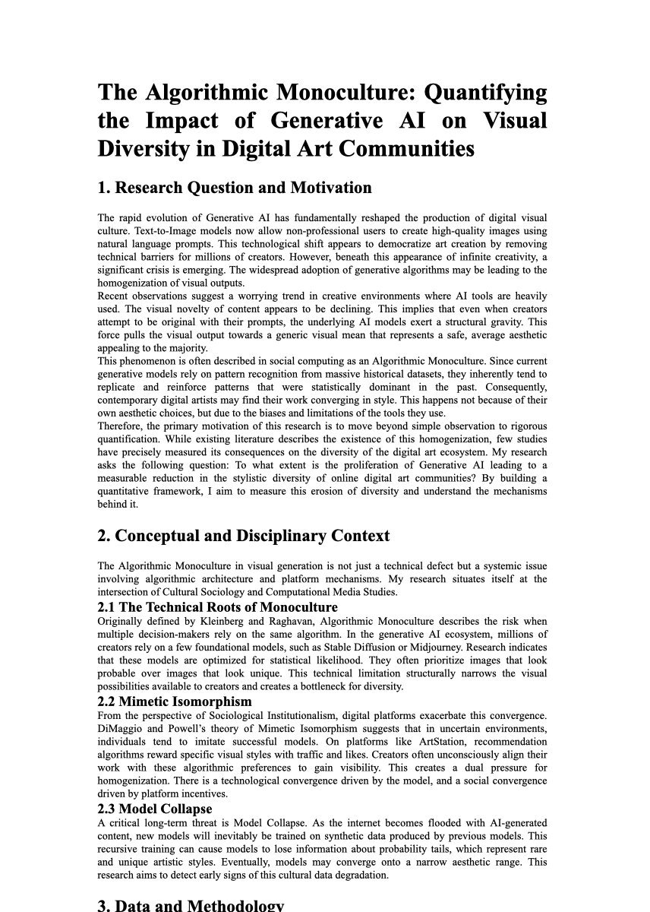
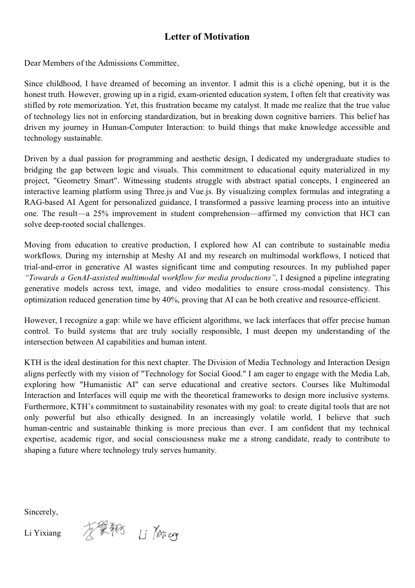
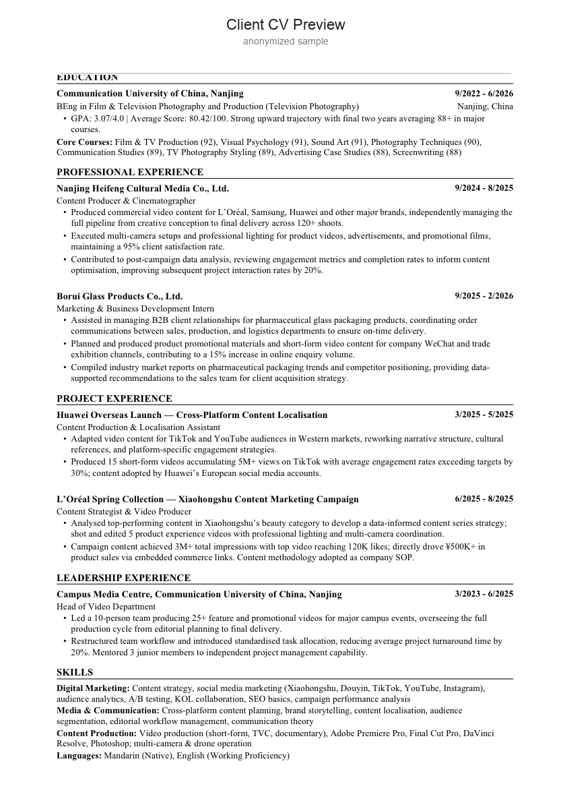

我关注的不只是把材料写顺，而是判断一个申请者应该如何被理解：哪些经历能形成主线，哪些项目真正匹配目标，文书结构如何把动机、能力和未来路径讲清楚。
文书不是润色任务，而是申请定位的最后呈现。
一个有效的申请故事，需要同时回答三件事：为什么是这个方向，为什么是这个申请者，为什么现在应该进入这个项目。我会先拆解背景、目标和项目要求，再决定文书的主线、证据顺序和表达边界。
对学生和家长来说，这意味着材料不再只是“写得更好看”。对机构来说，这意味着顾问需要能把复杂经历转化成稳定、可交付、能进入网申节奏的材料系统。
能力地图
背景诊断
拆解成绩、语言、实习、科研、竞赛、作品集和职业目标，判断哪些经历能成为申请证据。
申请策略
建立冲刺、匹配和保底梯度；判断项目窗口、申请人池、学院归属和录取口径。
文书系统
规划 CV、PS/SOP、Motivation Letter、Essay、Research Proposal 与推荐信之间的叙事分工。
流程交付
管理材料版本、网申表、deadline、多项目提交和信息校对，降低遗漏与表达偏差。
Selected cases
三个案例分别展示不同能力：自我申请里的长期背景规划，H 同学案例里的低起点转向叙事，以及 L 同学案例里的项目颗粒度判断。它们共同说明，留学规划的核心不是堆学校名单，而是把申请者和项目之间的匹配关系讲清楚。
Case 01
双非本科背景下的四年规划
我本科来自双非院校，数字媒体技术专业。院校背景不占优势时，申请竞争力不能靠临近申请季突击完成，而要在大学四年里提前规划：均分、语言、科研、实习、竞赛和作品集都需要服务于同一个申请方向。
- 背景
- 均分 87.5，雅思 6.5，德语 B2；一段 AI startup 实习，一段知名外企实习；EI 会议一作；数媒竞赛国一、米兰设计周国一等竞赛国奖；政府奖学金、讯飞奖学金、校奖学金等。
- 策略
- 把“技术实现、交互设计、AIGC 工作流、欧洲项目适配”连成主线，而不是把经历写成奖项和项目清单。
- 证明
- 这个案例体现的是长期背景规划能力，以及对欧陆和英语区交叉项目的课程结构、材料偏好与申请逻辑的理解。
Work sample · Case 01
把“经历很多”改写成一条申请主线
这里放的不是附件展示，而是这个案例里最能说明方法的材料：研究计划负责证明问题意识和方法论，动机信负责把技术、交互和未来项目连接成一个可被招生官理解的方向。

Algorithmic Monoculture
用研究问题、理论框架、数据方法和可行性证明“数字媒体 + AIGC + 交叉研究”不是松散兴趣，而是可继续深造的研究方向。

KTH / 交叉项目动机信
把 Geometry Smart、AIGC workflow、产品实习和欧洲项目偏好串联起来，形成“技术实现服务具体问题”的申请叙事。
Case 02
H 同学：从艺术/传媒背景转向 Marketing
H 同学来自南京传媒学院影视摄影与制作方向，均分 80.42，学术背景不强，且原专业偏艺术与内容制作。这个案例的重点不是掩盖短板，而是通过 CV storytelling 把影视制作、商业拍摄、品牌内容和市场传播经历重新组织成 Marketing 方向能接受的能力证据。
- 难点
- 本科背景和目标专业之间存在转向，需要让招生方看到“内容生产能力”如何转化为品牌、广告和市场传播能力。
- 策略
- 把 120+ 商业拍摄、L’Oréal / Huawei 等品牌内容、TikTok / YouTube 本地化和小红书内容营销经历，重新写成跨平台内容策略、用户洞察和营销执行能力。
- 结果
- 已获得悉尼大学 Master of Commerce；选校表中同时布局 Leeds MA Advertising and Design、Southampton MA Global Advertising and Branding 等广告/传播方向项目。
Work sample · Case 02
把艺术/传媒履历翻译成 Marketing 语言
这个案例的交互模块保留了 CV 与选校表的工作逻辑，但隐藏了个人姓名和联系方式。重点是让招聘方看到材料如何被重组，而不是暴露学生隐私。

CV Storytelling
将商业拍摄、品牌内容、本地化短视频和校园媒体管理重新排序，突出内容策略、用户洞察、跨平台传播和项目交付。
选校梯度
澳洲项目承担确定性，英国广告/品牌方向项目承担专业转向匹配；不是只堆排名，而是围绕“内容制作如何进入营销传播”配置项目组合。
Case 03
L 同学：没有明显软背景时的项目判断
L 同学来自浙江一本，均分 87，但缺少能直接拉开差距的软背景。除墨尔本大学、悉尼大学等相对可控目标外，港三新二对这类背景并不轻松。因此，这个案例的关键不是盲目冲刺名校，而是识别竞争力尚可、但申请窗口更合理的项目。
- 判断
- NTU 的企业人工智能项目隶属于继续教育学院，竞争强度与计算机学院项目不在同一量级；同时作为新开专业，信息差和申请窗口更明显。
- 策略
- 用“项目所属学院、项目新旧程度、课程定位、申请人池结构”判断真实难度，而不是只看学校名和 QS 排名。
- 证明
- 这个案例体现的是项目颗粒度判断能力，也就是俗称“捡漏”项目的识别能力。
Decision lens · Case 03
项目判断不是看校名，而是拆真实竞争池
对没有明显软背景的学生，项目颗粒度判断会比“冲不冲名校”更重要。下面四个判断点可以快速解释为什么某些新项目存在窗口期。
学院归属
继续教育学院、交叉学院和计算机学院面对的是不同申请人池。归属变化会直接改变竞争强度。